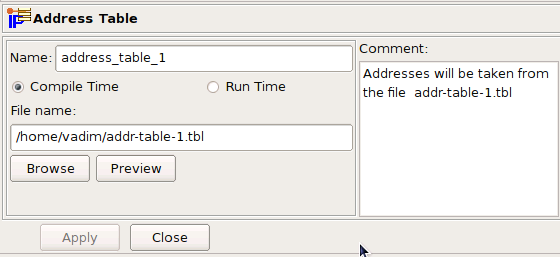
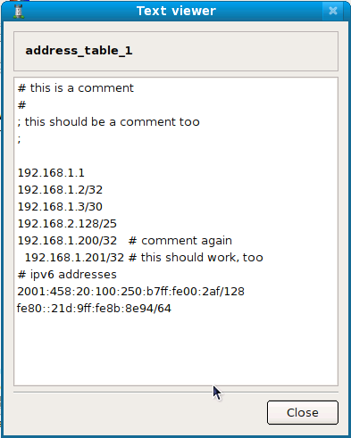
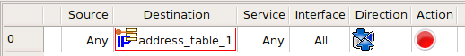
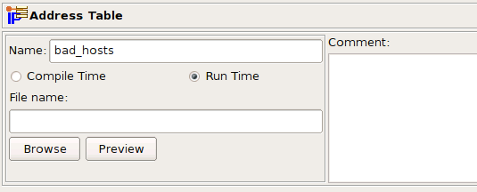
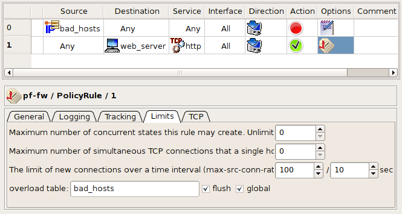

Firewall Builder project page: http://www.fwbuilder.org
| Author: vadim@fwbuilder.org Firewall Builder project page: http://www.fwbuilder.org |
This article continues the series of articles on Fireall Builder, a graphical firewall configuration and management tool that supports many Open Source firewall platforms as well as Cisco IOS access lists and Cisco ASA (PIX). Firewall Builder was introduced on this site earlier with articles Getting Started With Firewall Builder, Using Built-In Revision Control In Firewall Builder, Using Built-in Policy Installer in Firewall Builder, Using Firewall Object In Firewall Builder.
This article demonstrates how you can build firewall rules matching sets of ip addresses stored in external files.
More information on Firewall Builder, pre-built binary packages and source code, documentation and Firewall Builder Cookbook can be found on the project web site at http://www.fwbuilder.org/. Follow Firewall Builder Project Blog for announcements and articles on all aspects of using Firewall Builder.
Sometimes you need to apply a rule to a set of addresses, but you don't know what those addresses will be when you're writing the policy. The Address Table object can help.
The Address Table object has the following fields:
Name:
The name of the Address Table object
Compile Time / Run Time:
Indicate whether you want the file to be loaded with the firewall compiler runs (Compile Time) or when the firewall runs the firewall script (Run Time).
File name:
The name of the text file you want to load. (The file
contains IP addresses or IP address ranges.) The filename can
have any extension. If you want the file to load at run time,
you must specify the path and name where the file will be on
the
Browse button:
Used to populate the file name and path if the file is on the local machine.
Preview button:
Once the File name field is populated, use this button to view the file.
Comment:
A free-form text field used for comments
The "Compile Time" and "Run Time" radio buttons define when the addresses will be read from the file: when the firewall script is generated by Firewall Builder or when the firewall runs the script. If object is configured as "Compile Time", the Firewall Builder policy compiler opens the file during compilation and replaces the "Address Table" object in policy rules with the set of addresses from the file. This means the file with addresses must be accessible on the machine where the Firewall Builder GUI and policy compilers run. If the object is configured as "Run Time", policy compiler does not try to find and open the file but instead generates a firewall script that will do this when it is activated. This means the file with addresses must be located where it is accessible by the firewall, and the object must be configured with the full path to it on the firewall.
Here is an example of the file contents (this is what you see if you click "Preview" button in the object dialog):

Note that comments in the file can start with '#' or ';', that a comment can follow an address on the same line or take the whole line and that lines can start with white space for formatting. This example file contains both IPv4 and IPv6 addresses for illustration purposes.
Compile-time Address Table objects are supported on all target firewall platforms because addresses are read by the compiler. The compiler then generates normal configuration lines or script commands. Run time Address Table objects require special support from the target firewall and therefore supported only on some of them. Currently Run Time Address Table objects can be used in rules for iptables and PF firewalls.
Let's look at the firewall script generated by Firewall Builder for the iptables and PF when the Address Table object used in the policy rule is configured first as "Compile Time" and then as "Run Time". The rule is very simple and looks like this:

This rule, with the object set to "Compile Time", generates the following output:
# Rule 0 (global) # $IPTABLES -A INPUT -d 192.168.1.1 -j DROP $IPTABLES -A FORWARD -d 192.168.1.2 -j DROP $IPTABLES -A FORWARD -d 192.168.1.3/30 -j DROP $IPTABLES -A FORWARD -d 192.168.2.128/25 -j DROP $IPTABLES -A FORWARD -d 192.168.1.200 -j DROP $IPTABLES -A FORWARD -d 192.168.1.201 -j DROP
The compiler replaced object "address_table_1" in the Destination with addresses it took from the file. Option "assume firewall is part of any" was turned off in the firewall object settings, which is why compiler did not generate rules in the OUTPUT chain. However one of the addresses in the file matched the address of one of the interfaces of the firewall (192.168.1.1) and the corresponding rule went into the INPUT chain. Other addresses were copied from the file verbatim, including netmask specifications. The Policy object of this firewall was configured as "IPv4 rule set", because of this the compiler dropped the IPv6 addresses it found in the file. If the rule set was configured as a mix of IPv4 and IPv6, compiler would use IPv4 addresses in IPv4 rules and IPv6 addresses in IPv6 rules.
# Tables: (1)
table { 192.168.1.1 , 192.168.1.2 , 192.168.1.3/30 , 192.168.2.128/25 , \
192.168.1.200 , 192.168.1.201 }
# Rule 0 (global)
#
block in quick inet from any to <tbl.r0.d>
block out quick inet from any to <tbl.r0.d>
The output for PF is simple because Firewall Builder can use the built-in table facility. All addresses are copied from the file verbatim into the table tbl.r0.d.
# Using 1 address table files check_file "address_table_1" "/home/vadim/addr-table-1.tbl" # Rule 0 (global) # grep -Ev '^#|^;|^\s*$' /home/vadim/addr-table-1.tbl | while read L ; do set $L; at_address_table_1=$1; $IPTABLES -A FORWARD -d $at_address_table_1 -j DROP done
First, the generated script checks if the file specified in the Address Table object exists on the firewall machine. If the file is not found, the script aborts execution to avoid loading incomplete iptables rules. However, the script cannot verify that the file is the one you intended it to be, it just assumes that if the file with this name exists it is the right one and tries to interpret it as a list of IP addresses, with one address per line. Then the script reads the file line by line, skipping comments, and assigns IP addresses to the shell variable at_address_table_1, which it then uses in the iptables command.
Since the compiler did not see the addresses from the file, it could not detect that one of them matched an address of the firewall and all iptables commands went to the FORWARD chain. The file /home/vadim/addr-table-1.tbl should be located on the firewall where the generated iptables script will be executed so the script can find it.
Here is what you get if the option "Assume firewall is part of any" is turned on in the firewall object settings:
# Rule 0 (global) # grep -Ev '^#|^;|^\s*$' /home/vadim/addr-table-1.tbl | while read L ; do set $L; at_address_table_1=$1; $IPTABLES -A OUTPUT -d $at_address_table_1 -j DROP done grep -Ev '^#|^;|^\s*$' /home/vadim/addr-table-1.tbl | while read L ; do set $L; at_address_table_1=$1; $IPTABLES -A FORWARD -d $at_address_table_1 -j DROP done
The difference is that compiler generated two sets of commands, one in chain OUTPUT and another in chain FORWARD. The original rule has "any" in source, and if option "Assume firewall is part of any" is turned on, the compiler assumes the source of the rule can have either an unknown address or the firewall. The former makes it generate iptables command in the FORWARD chain and the latter makes it generate iptables command in the OUTPUT chain. This logic is not specific to the Address Table object type; the compiler does this regardless of the type of the object used in destination if source is "any" and option "Assume firewall is part of any" is turned on.
# Tables: (1) table persist file "/home/vadim/addr-table-1.tbl" # Rule 0 (global) # # block in quick inet from any to <address_table_1> block out quick inet from any to <address_table_1>
PF is even easier in the case of run time address tables. Compiler just uses table facility with persist and file options to direct pfctl to open the file and read its contents. In this case the file should follow formatting requirements of PF.
Policy compiler for PF treats Address Table objects with empty file name specially. It just generates the line "table <table_name>" at the beginning of the .conf file with no file specification. This table will not be populated when .conf file is loaded and therefore will remain empty, but it can be used in the rules.
Addresses can be added to the table later using external scripts that call pfctl like this:
pfctl -t bad_hosts -T add 192.0.2.1
Another interesting possibility is to automatically populate the table if option "overload" is used in combination with other rate limiting options on a rule. Taking an example from the man page for pf.conf, here is how it looks:
block quick from <bad_hosts>
pass in on $ext_if proto tcp to $webserver port www keep state \
(max-src-conn-rate 100/10, overload <bad_hosts> flush global)
The idea behind these rules is that if some host tries to connect to the web server too often—more often than is allowed by max-src-conn-rate 100/10—its address will be added to the table <bad_hosts> by PF. The next time this host tries to connect, the packet coming from it will be denied by the blocking rule right away.
To implement these rules in Firewall Builder, you would create an Address Table object with name "bad_hosts" but a blank file name, configured to resolve at run time:
Address Table Object bad_hosts

Then, use this Address Table object in the source field of a policy rule with action "Deny". This is rule #0 in the screenshot below. Another rule, rule #1 in the screenshot, has action "Accept" and matches destination against address of the web server, protocol http, and has limiting options set up to restrict the number of connections and to turn overload table on, with the name of the overload table "bad_hosts" that matches the name of the Address Table object.
Address Table Object bad_hosts Rules

These two rules, as shown on the screen shots, yield the following PF configuration that matches the one given in the man page:
# Tables: (1) table <bad_hosts> persist # Rule 0 (global) # block in log quick inet from <bad_hosts> to any # # Rule 1 (global) # pass in quick inet proto tcp from any to 192.168.1.1 port 80 \ keep state ( max-src-conn-rate 100/10, overload <bad_hosts< flush global )